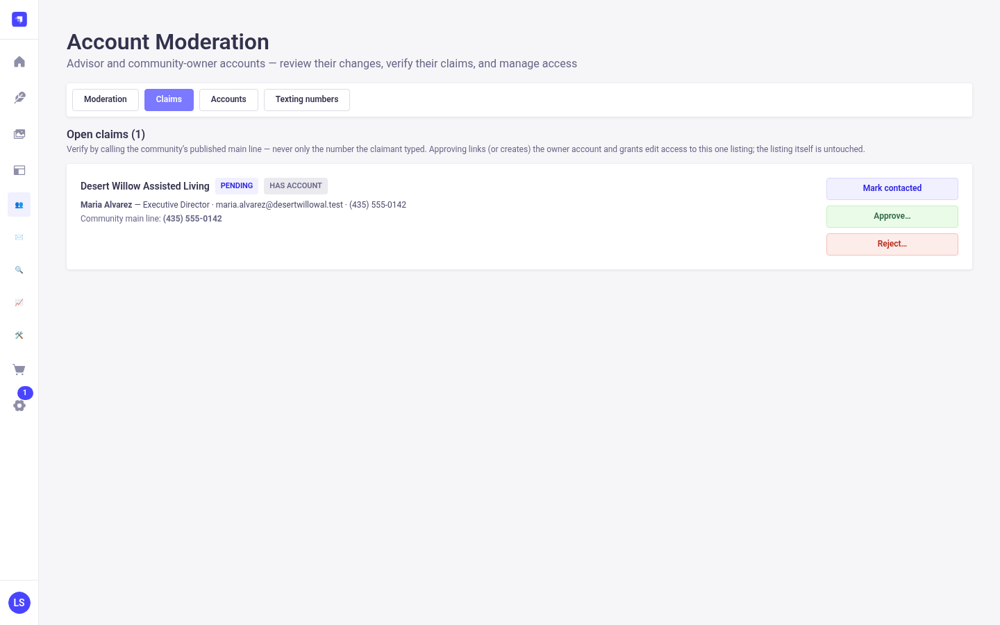
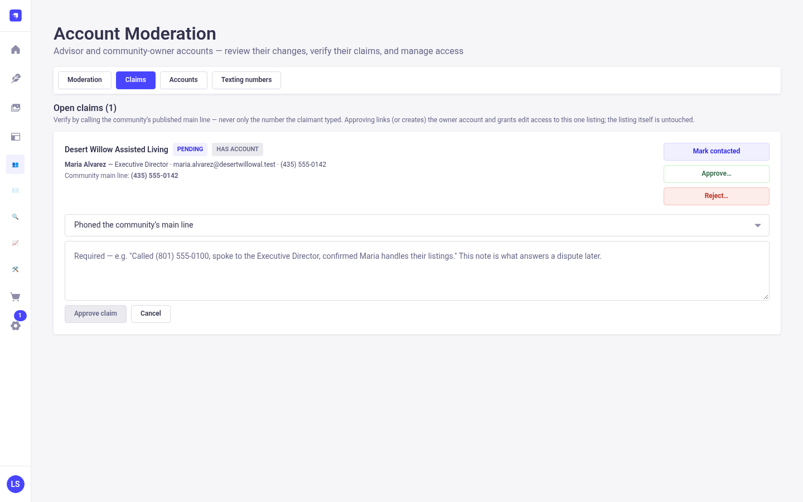
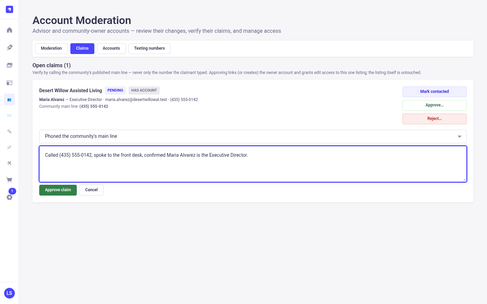
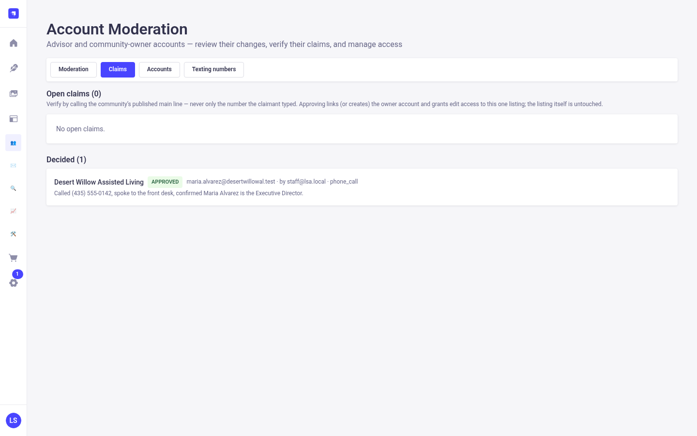

Existing, unchanged. The admin screen, the Mark contacted, Approve and Reject controls, and the required verification note all work as they do today.
Review preview with sample data, not live. Buttons that save or send do nothing here. All steps Previous step Next step
Screenshots of the real Strapi admin, taken from a local copy with throwaway sample data. Nothing here touched production.




Behind the scenes in this PR, approving also routes the owner's later edits to review and sends the approval email in step 9. The admin screen itself is unchanged.